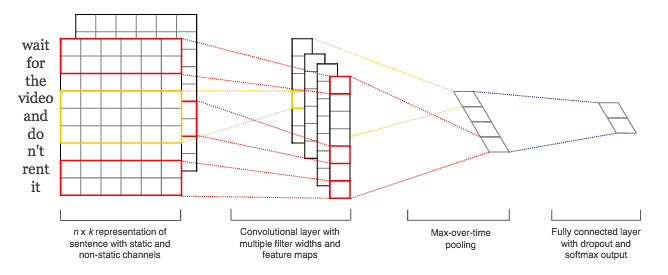

Snowman: A REST Service For Detecting Malicous Domains With ConvNets
In a recent post, I described my implementation of a paper from Invincea where I used an LSTM to build a classifier to detect malicious domains. I wanted to continue in that same vein but go the final step and actually deploy the resulting model in a more useful way. To that end, I've created a project called Snowman where I've trained a convolution neural network for text classification on URLs and then deployed this model behind a REST API so that the model can be queried and used by anyone. On the backend I'm using Flask and deploying through Heroku, and on the modeling side I'm using Keras and Tensorflow. A little bit more detail follows below.
For the model, the goal is to do text classification. That is, if I can gather a training set with known "malicious" domain names and known "benign" domain names, then I will create a classifier to find separability between the two sets in some feature space. In that last post I used a recurrent neural network, but here I've gone down a slightly different path. Inspired by recent work with applying convolutional networks to text, I used a CNN approach instead of a recurrent/sequential approach. The convolutional kernels, pooling layers, and activations are all fairly standard. I suppose the slightly uncommon thing is how to use convolution with text data. To accomplish this, a common strategy is to use an embedding as the first layer of the network. For our input string data, each character in a string is represented as a point in a low dimensional vector space. Thus, a whole string (character sequence) gives us a numeric array - to which I zero-pad to ensure standardized sizes across all strings in the training data. Then, to this numeric array, we can apply all the convolutions we desire.
The architecture I've settled on for now is as follows. I have an embedding layer with 15 embedding dimensions. Thus, the character space, which might be an approximately 50-dimensional sparse space, is mapped down into this lower-dimensional dense vector space. For all the input strings in the training set, I zero-pad them as neccesary so that they all have a standardized length. The length is determined from the maximum seen in the training data, but let's suppose its 30. So every input string is thus transformed into a numeric array of 15 rows (embedding dimension) and 30 columns (standardized length). To this numeric array, we can apply all the convolutions we like.
In image processing, we might use small kernel sizes like 3x3. With text, we'll go a different direction. My kernel "height" will be exactly as tall as the embedding dimension. And then the kernel "width" can be as wide as we want: whatever we think captures interesting character-to-character correlations and relationships. For example, a kernal width of 6 would look at 6 characters simlutaneously. We then apply this kernel only temporally (because it is as "tall" as the embedding dimension) and convolve from left to right across the input string. In this way, the kernels that we estimate through training are going to capture the important features that arise from the ordered sequence of the characters. In this way, we use a CNN for a datatype that is inherently sequential and ordered: a regime usually left for RNNs only.
Naturally, we don't want only one kernel but several. Further, we don't have to use only one kernel-width, but can use a few. In this case, I used kernels of width 2, 4, and 6 and used 15 kernels for each of those.
As is common with CNNs, we might use pooling layers next to perform some aggregation on the resulting feature maps and to endow our model with some translation-invariance. For simplicity, I'll just use global max pooling, which simply extracts the largest activation in each feature map. Thus, I'm left with a single output for each kernel, yielding 15x3 outputs which I concatentate together into a flat feature vector. I then add a little dropout and a final dense layer for making my binary classification. There's obviously a million tweaks that could be made and my point here was not to go down the road of architecture optimization. For those interested, the mode code is here.
As in the last post, I'm gathering training data from the blackweb project which has collected thousands of samples of known-malicious and known-benign domain names. I use typical train-test-split strategy and train the network described above for 20 or so epochs. This got me to an AUC on the hold-out data of about 0.98, which was good enough to move along with.
Once I had a trained model, I build a simple app using Flask and have exposed a REST API where the model can be reached by hitting a public endpoint. Upon startup, the app deserializes the saved model and when a PUT or POST requests come into the endpoint, the app runs the query string against the model for scoring. This application is deployed on heroku at "afternoon-bastion-75939.herokuapp.com". Here's an example of querying the endpoint and getting back the resulting score.
curl http://afternoon-bastion-75939.herokuapp.com/model -d "url=zis32msdi3.com" -X PUTThis returns
{"input query": "zis32msdi3.com", "score": "0.19122"}
The heroku and Flask part of this project was simple enough, though getting various configurations and port bindings correct took a little iteration. If you're hoping the use a similar stack, I hope the code < in my repo is helpful and saves you a couple hours of confusions.
The next step I want to look into here is to find more interesting training data. I think DGA is likely a more compelling use case here, so after I find some publicly-avaiabile training data I'll probably deploy an additional model focused on DGA detection.